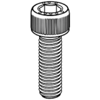
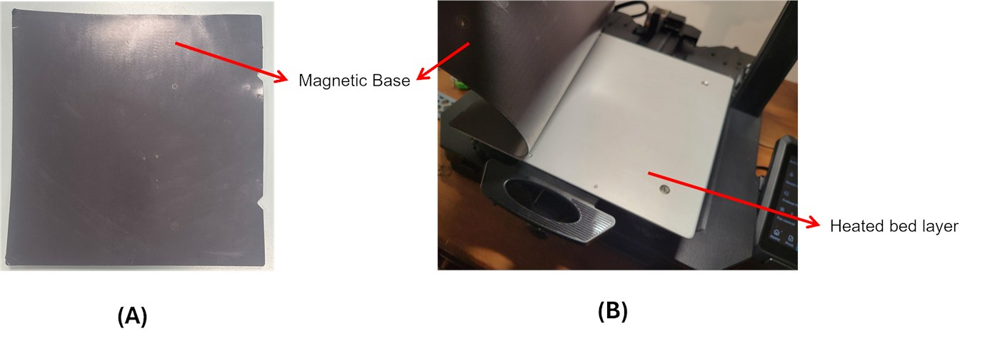
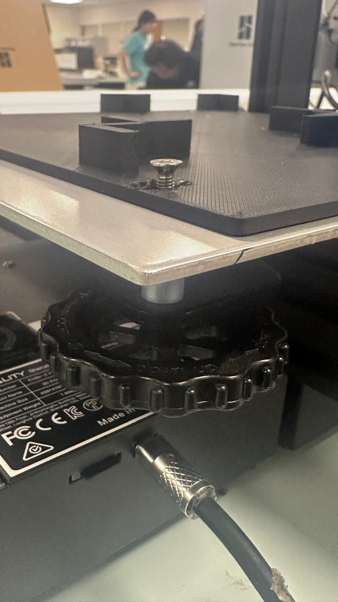
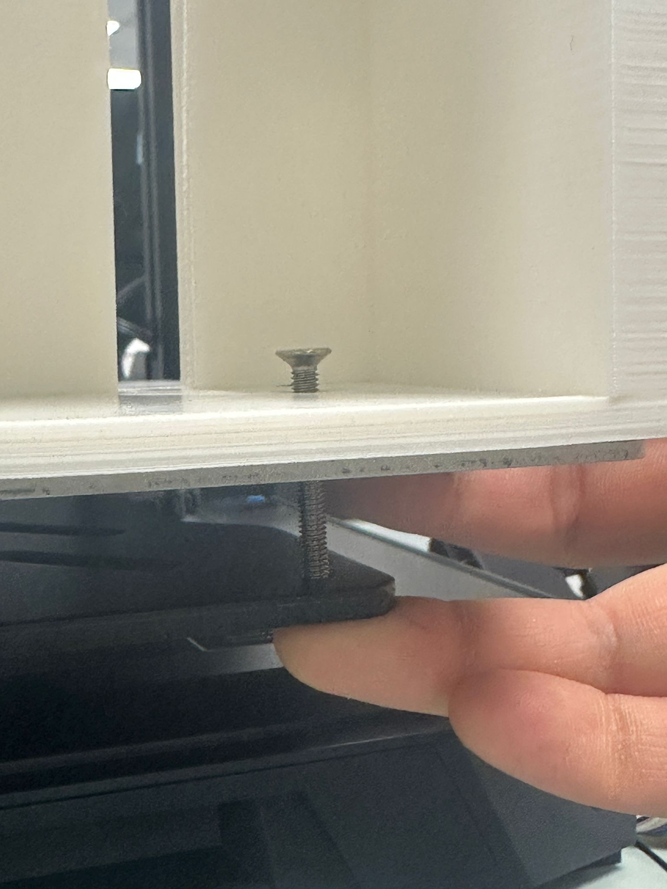
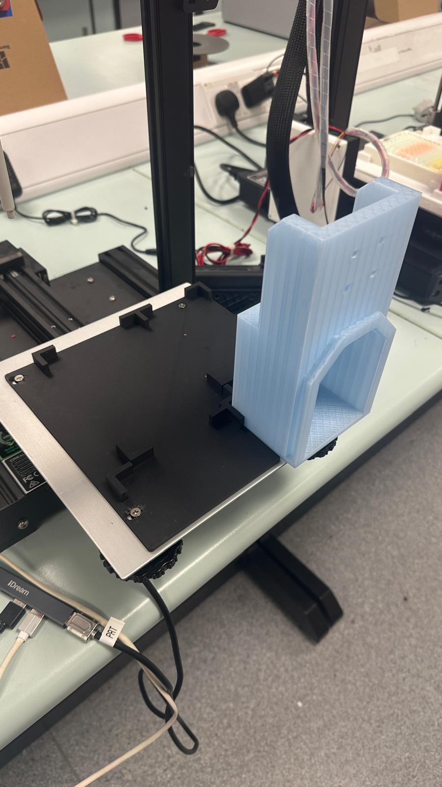

Assembly · Sub-step 2 of 4
Installing the Bed Plate, Tip Disposal and Tip Catcher
Mount the bed plate, tip disposal chute, and tip catcher onto the deck.
You will need
Pliers

M5 x 10mmx 2
M3 x 6mm
x 2
x 2
Instructions
-
Remove the magnetic base — it's held on with a very strong adhesive. Use a pair of pliers to pull it off, and have a second person hold the printer steady while you do.

Figure 1: Remove magnetic base. -
You'll find four screws already holding the manual levelling knobs to the aluminium bed. Reuse these to mount the bed plate and tip disposal, and swap the existing springs for the 3D-printed standoffs.
Assembly 
Figure 2: Bed plate corner — the countersunk screw goes through the bed plate and the aluminium bed, then down into the levelling knob. The screw head should sit flush with the plate. 
Figure 3: Tip disposal corner — the screw passes through the tip disposal base and the aluminium bed. Hold the knob steady from underneath while you tighten from the top. 
Figure 4: Finished result — the bed plate screwed down at its corners, and the tip disposal mounted on the corner of the aluminium bed beside it. Check both sit flat and don't rock.